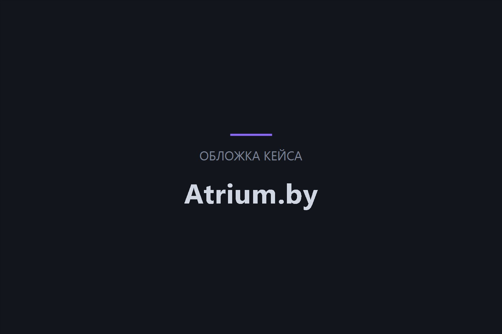
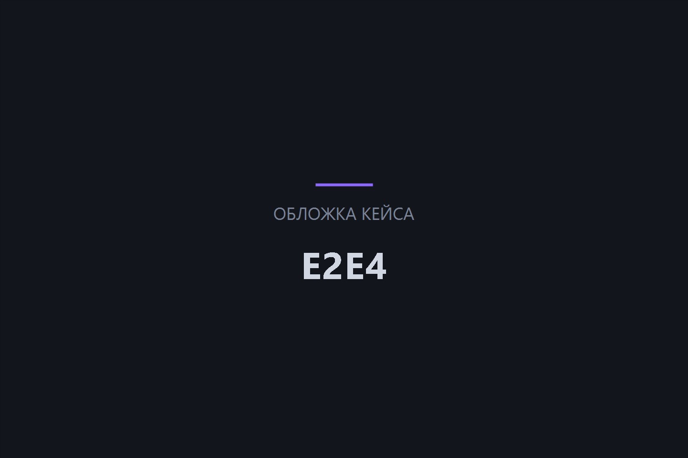
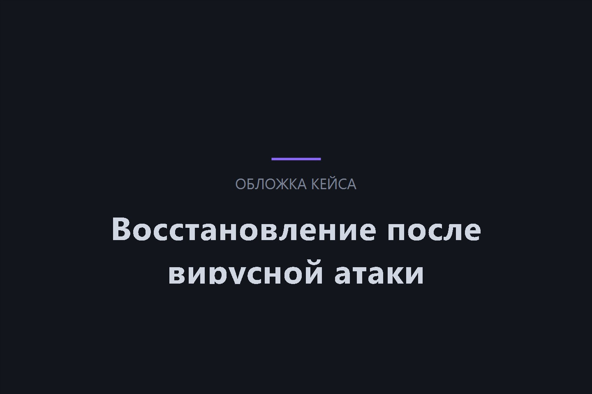
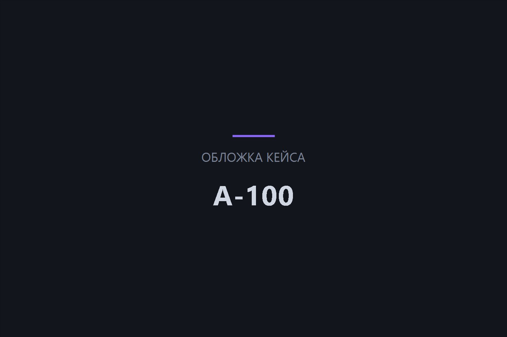
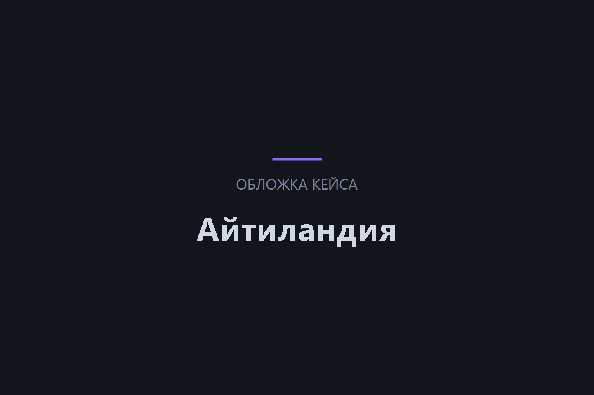

Техническая поддержка сайтов и IT-систем
Берём на себя сопровождение сайтов, Битрикс24, IP-телефонии и ПО: мониторинг, обновления, устранение сбоев и доработки. Реакция на критические ошибки — до 1 часа.
-
от 9 000 ₽
в месяц тарифы поддержки
точную смету фиксируем в договоре
-
до 1
часа реакция на ошибки
на старшем тарифе «Решение»
-
24/7
режим поддержки
доступен по договору


Кейсы поддержки
-
Atrium.by техническая поддержка интернет-магазина

-
E2E4 доработки и поддержка Битрикс24

-
Восстановление сайта и CRM после вирусной атаки

-
А-100 доработки и техническая поддержка сайта

-
Айтиландия внедрение и развитие Битрикс24

Услуги и стоимость
Тарифы поддержки зависят от объёма работ и скорости реакции. Точную смету фиксируем в договоре.
-
Техническая поддержка сайтов
Следим за стабильностью сайта, устраняем ошибки, обновляем систему и защищаем от угроз.
- Тарифы от 9 000 ₽/мес
-
Техподдержка Битрикс24
Помогаем устранить любую проблему с корпоративным порталом.
- Тарифы от 9 000 ₽/мес
-
Поддержка VoIP-станций
Обеспечиваем бесперебойную работу IP-телефонии и оперативно решаем проблемы.
- Тарифы от 9 000 ₽/мес
-
Техническая поддержка ПО
Мониторинг и устранение сбоев, обновления и консультации по работе программного обеспечения.
- Тарифы от 9 000 ₽/мес
Рассчитайте стоимость работ за 2 минуты
Шаг 1 из 4
- 1. Услуга
- 2. Задача
- 3. Подробности
- 4. Контакты
Выберите услугу
Почти готово!
Теперь у нас есть верхнеуровневые требования к вашему проекту. Заполните контактные данные ниже, и наши менеджеры оперативно свяжутся, чтобы сориентировать вас по стоимости и срокам реализации проекта.
Как мы работаем
-
Аудит и подключение
Проверяем сайт или систему: состояние, ошибки, скорость, обновления и безопасность. Подключаем к мониторингу и вместе выбираем тариф поддержки.
Вы получаетеАудит, тариф и план работ
-
Настройка мониторинга
Настраиваем круглосуточный контроль доступности и производительности. Налаживаем канал приёма заявок — личный кабинет, почту или мессенджер.
Вы получаетеМониторинг 24/7 и канал заявок
-
Регулярные работы
Устанавливаем обновления, проверяем безопасность и делаем резервные копии. Доработки по тарифу — от нескольких часов в месяц до безлимитного пакета.
Вы получаетеАктуальные системы и резервные копии
-
Реакция на инциденты
Критические ошибки устраняем от 1 часа — в зависимости от тарифа. Диагностируем причину, восстанавливаем работу и предупреждаем повторение сбоя.
Вы получаетеБыстрое восстановление работы
-
Отчётность и развитие
Ежемесячно отчитываемся о выполненных работах и состоянии системы. Предлагаем улучшения: скорость, безопасность, доработка функционала.
Вы получаетеПрозрачная отчётность и план развития
Кто будет работать над проектом
Команда формируется индивидуально под каждый проект — состав и роли зависят от задач и сложности проекта
-
 Проектный менеджер
Координирует работу команды, контролирует сроки, коммуникацию и выполнение задач по проекту.
Проектный менеджер
Координирует работу команды, контролирует сроки, коммуникацию и выполнение задач по проекту.
-
 Бизнес-аналитик
Изучает задачи бизнеса, собирает требования и помогает определить структуру, функции и приоритеты проекта.
Бизнес-аналитик
Изучает задачи бизнеса, собирает требования и помогает определить структуру, функции и приоритеты проекта.
-
 UX/UI дизайнер
Проектирует пользовательские сценарии, прототипы и визуальную концепцию проекта, чтобы он был удобным и понятным.
UX/UI дизайнер
Проектирует пользовательские сценарии, прототипы и визуальную концепцию проекта, чтобы он был удобным и понятным.
-
 Фронтенд-разработчик
Реализует интерфейсы, адаптивность и интерактивные элементы, обеспечивая корректную работу проекта на всех устройствах.
Фронтенд-разработчик
Реализует интерфейсы, адаптивность и интерактивные элементы, обеспечивая корректную работу проекта на всех устройствах.
-
 Бэкенд-разработчик
Отвечает за серверную логику, интеграции, базы данных и стабильную работу функционала системы.
Бэкенд-разработчик
Отвечает за серверную логику, интеграции, базы данных и стабильную работу функционала системы.
-
 QA-инженер (тестировщик)
Проверяет функциональность, находит ошибки и контролирует качество проекта перед запуском.
QA-инженер (тестировщик)
Проверяет функциональность, находит ошибки и контролирует качество проекта перед запуском.
-
 Контент-менеджер / копирайтер
Готовит и структурирует тексты, помогает раскрыть преимущества компании и сделать страницы понятными для клиентов.
Контент-менеджер / копирайтер
Готовит и структурирует тексты, помогает раскрыть преимущества компании и сделать страницы понятными для клиентов.
-
 DevOps-инженер
Настраивает окружение, мониторинг, резервное копирование и обеспечивает надёжную работу проекта.
DevOps-инженер
Настраивает окружение, мониторинг, резервное копирование и обеспечивает надёжную работу проекта.
-
 Аккаунт-менеджер
Сопровождает клиента после запуска, помогает с новыми задачами, приоритетами и дальнейшим развитием проекта.
Аккаунт-менеджер
Сопровождает клиента после запуска, помогает с новыми задачами, приоритетами и дальнейшим развитием проекта.
Наши достижения
Официальные Платиновые партнёры Битрикс24 и Золотые партнёры 1С-Битрикс. Имеем сертификат Крупных корпоративных внедрений.


Отзывы клиентов
-

От лица компании ЗАО «СберЛизинг» выражаем искреннюю благодарность разработчикам компании ООО «Итач-софт» за их профессионализм и ответственность в создании нашего нового сайта, а также разработку калькулятора для расчета лизинговых платежей.
Благодаря Вашей компании ЗАО «СберЛизинг» получили качественный и функциональный сайт, который, на наш взгляд, достойно представляет нашу компанию, а также удобный инструмент для расчетов и будущих возможных интеграций в иные программные комплексы компании.
-

От лица нашей компании хочу сделать отзыв о совместно работе с ООО «Итач-софт».
Компания «Итач-софт» очень ответственно подходит к нашим проектам. Они сформировали команду с которой налажена очень быстрая обратная связь.
Все процессы максимально понятны и прозрачны. Мы добавлены на рабочий портал компании, где можем коммуницировать по задачам. Решать что-то по ходу и сразу. Делать быстрые созвоны. Это позволяет избежать затягивания разработки и принятия неправильных, неэффективных решений.
-

ОАО «БНБ-Банк» искренне благодарит компанию ООО «Итач-софт» за качественное и своевременное обслуживание сайта нашей организации.
За время работы сотрудники компании ООО «Итач-софт» проявили себя как добросовестные, исполнительные и отзывчивые специалисты. Все возникающие вопросы решались ими профессионально и в срок.
Особенно хочется отметить ответственное и внимательное отношение к требованиям и пожеланиям со стороны нашей компании.
-

Настоящим письмом выражаем свою искреннюю благодарность компании «Итач-софт» за отличную работу, которую проделала Ваша компания по созданию и запуску нашего сайта, а также по разработке собственной специализированной CRM-системы.
В работе с Вами мы увидели профессионализм, знание технологий, системный подход, соблюдение сроков, способность увидеть и понять наши потребности, и предложить лучшее решение.
Надеемся на дальнейшее плодотворное сотрудничество с Вами!
Частые вопросы о технической поддержке
Задать свой вопрос-
Мониторинг работоспособности, обновление систем, диагностика и устранение сбоев, консультации специалистов, анализ производительности и доработки функционала — состав зависит от тарифа.
-
Тарифы начинаются от 9 000 ₽ в месяц: «Базис», «Динамика», «Профи» и «Решение». На старших тарифах включены часы доработок, а стоимость дополнительного часа снижается.
-
На тарифе «Базис» — до 6 часов, на «Динамике» и «Профи» — до 4 часов, на «Решении» — до 1 часа. Круглосуточный режим доступен на старшем тарифе.
-
Да. Сайт, Битрикс24, IP-телефонию и ПО можно взять на сопровождение одним договором — с единым менеджером и отчётностью.
-
На «Динамике» включено 3 часа доработок в месяц, на «Профи» — 5 часов, на «Решении» — безлимит. Дополнительные часы оплачиваются по ставке тарифа.
Расскажите о вашем проекте
Опишите задачу — в течение часа ответим, как её решить, и рассчитаем предварительную стоимость.